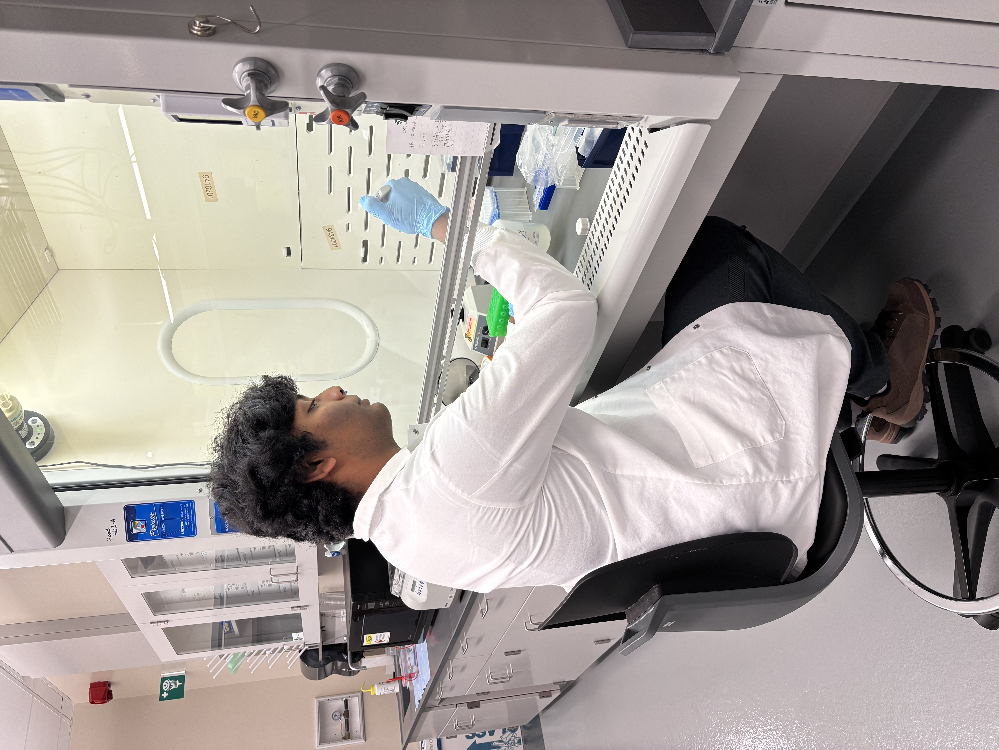
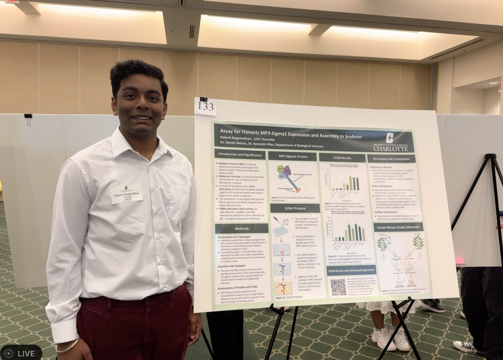

About Me

Hello, my name is Rakesh Nagamathan. I am a junior at UNC Chapel Hill majoring in Biology with a minor in African American and Diaspora Studies. Through my interdisciplinary education in both Biology and African American Studies, I will explore how innovations in animal healthcare can revolutionize human treatment, especially those of marginalized communities. My academic journey is defined by a commitment to interdisciplinary collaboration, whether it be engineering therapeutic proteins for Multiple Sclerosis in transgenic soybeans or studying vector-borne diseases and maternal metabolism.

I have had multiple years of experience within the academic and clinical sectors of medicine, and have emphasized the importance of research throughout my education. As a student in the Honors Program in Biological Sciences under the SoyMeds Lab, I conducted specialized research under the mentorship of Dr. Daniel Nelson and Dr. Kenneth Piller on transgenic soybean bioengineering aimed at synthesizing therapeutic proteins for Multiple Sclerosis. At UNC Charlotte's 2026 Undergraduate Research Conference (URC) I was given the opportunity to present a research poster on my research titled, "Assay for Trimeric MP3-Sigma1 Expression and Assembly in Soybean".

I also performed data analysis and clinical research under Dr. Saroja Voruganti at the UNC Nutrition Research Institute in Kannapolis in a comprehensive research role integrating wet-lab, computational, and clinical methodologies. I contributed to diverse projects focused on maternal metabolism, pediatric health, purine metabolites, and gene/enzyme expression, and developed a robust technical skillset in data science by utilizing RStudio for statistical analysis, Tableau for data visualization, and Excel for complex data management.
Beyond the lab, I am a dedicated Patient Safety Attendant, where I ensured continuous patient safety through 1-on-1 observation, providing high-level monitoring for at-risk patients as delegated by Registered Nurses. I also maintained accurate clinical documentation of patient behavior and status changes to support informed decision-making by healthcare providers. I have also worked as an Organic Chemistry and Biochemistry tutor for the UNC Charlotte Center for Academic Success, and have been a long-term hospital volunteer. Through my experiences in my education, I am passionate about pursuing a career as an academic physician to bridge the gap between organismal research and clinical practice for populations who need it the most.
Academic Resume
Research Statement
Throughout my undergraduate career, I have developed an extensive array of skills across numerous disciplines in order to maintain the competencies required to succeed in scientific research in my future career. I began my journey as an undergraduate researcher in UNC Charlotte’s Epidemiology and Community Health Department alongside Dr. Rafael Vieira in a wet lab, field, and computational lab setting. I participated in field sampling across Mecklenburg County, collecting ticks, deer spleens, and deer keds, and learned the identification of all major North Carolina tick species and pathogens. Additionally, I performed multiple wet-lab procedures, including tick imaging, DNA/RNA extractions, nested and regular PCR, and gel electrophoresis.
With this basis of research, I was able to expand my skills into the clinical sector, where I conducted research in UNC Chapel Hill's Nutrition Research Institute under Dr. Saroja Voruganti in a wet lab, computational lab, and clinical lab setting. I had the unique opportunity to work on projects involving children’s health, gene and enzyme expression, and maternal metabolism. Moreover, I learned how to use Tableau for data visualization, R Studio for data analysis, and Microsoft Excel to organize and collect data. Also, I performed wet-lab procedures including protein assays, PCR, blood aliquoting, and cell culture. Finally, I shadowed participants in a clinical setting and understood the process of participation in a study.
My interest in human health and applications of molecular biology led me to begin my Honors Thesis research in UNC Charlotte’s Biology Department under Dr. Daniel Nelson on a transgenic soybean project. My focus was on expressing a therapeutic protein for multiple sclerosis in soybean plants for future animal testing. I worked with complex scientific literature and learned how to communicate scientific information in a digestible manner, while also perfecting protein assay methods and procedures in the wet lab.
Working on projects involving childhood obesity and children’s health in Dr. Voruganti’s Lab, and developing my own research and honors thesis involving immunology and molecular biology in the SoyMeds lab inspired me to continue research in Pediatric Infectious Diseases at UNC Chapel Hill, where I joined the Darville Lab to work on finding a suitable vaccine against Chlamydia trachomatis. C. trachomatis is an obligate intracellular bacterium, globally recognized as the most common sexually transmitted bacterium in the world. 75–80% of females and 65–70% of males that contract Chlamydia are asymptomatic, consequently allowing for increased transmission due to a lack of accurate diagnosis. Sexually active adolescents who contract and are diagnosed with Chlamydia administer antibiotics such as Doxycycline and Azithromycin, both of which do not prevent reinfection cycles or promote herd immunity. Overall, due to its increased incidence rates, there becomes a need to develop a cure that permanently prevents its transmission between hosts.
According to Dr. Toni Darville, technologies and “molecular approaches” within the last 15 years have helped progress the development of a vaccine that can act against “chlamydia[l]” infection. The Darville lab has recently developed a conjugated vaccine, CPAF-STG1151, which has shown promising results in mouse models through intramuscular administration, characterized by lower bacterial burden and variable gross pathology. In my honors thesis in the Darville lab, I want to investigate how different routes of administration, such as intravaginal and transcervical routes, can affect the efficacy of the vaccine. Through my past experience and honors thesis, I will have developed a deep understanding of research, and will be able to continue performing and involving myself in the field of medicine, which is dependent on the development of newer approaches to solve long-lasting ailments.